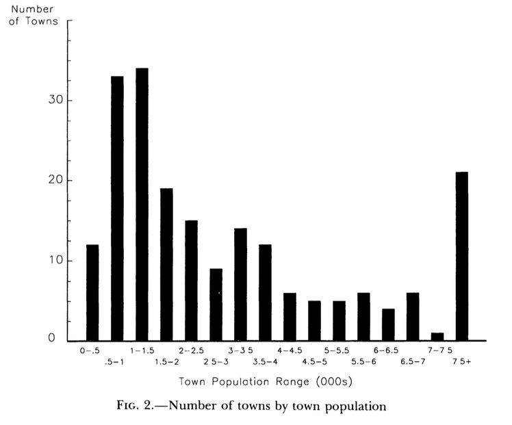
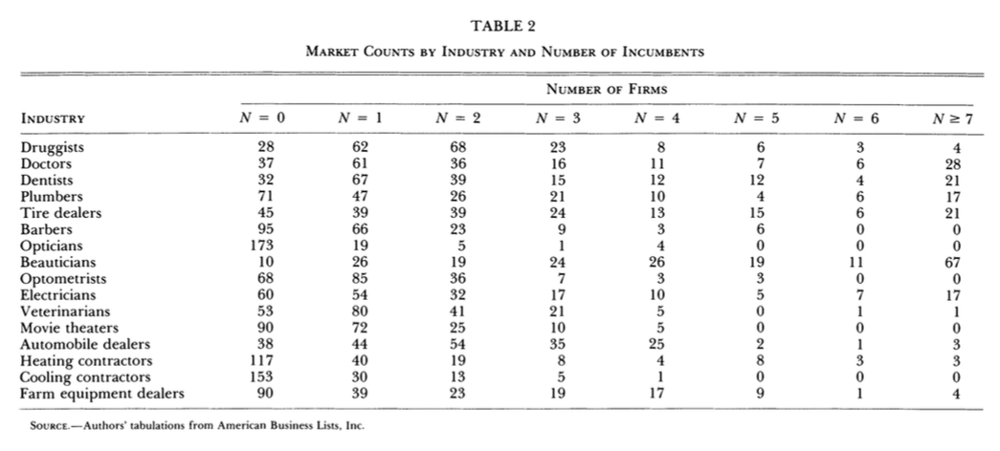
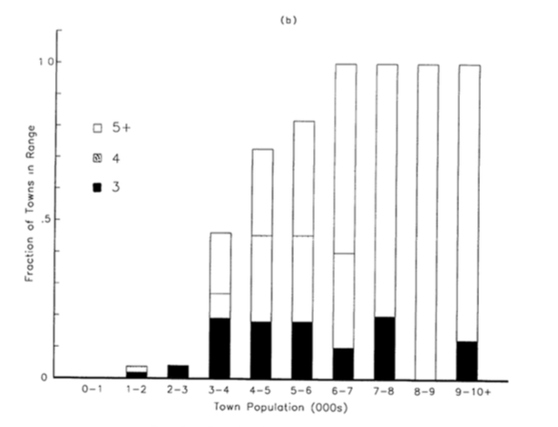
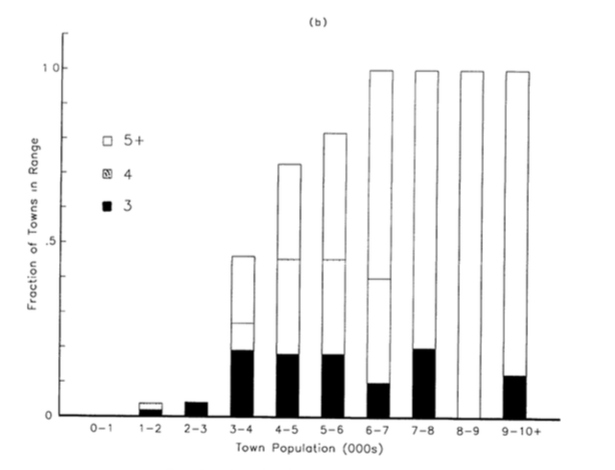
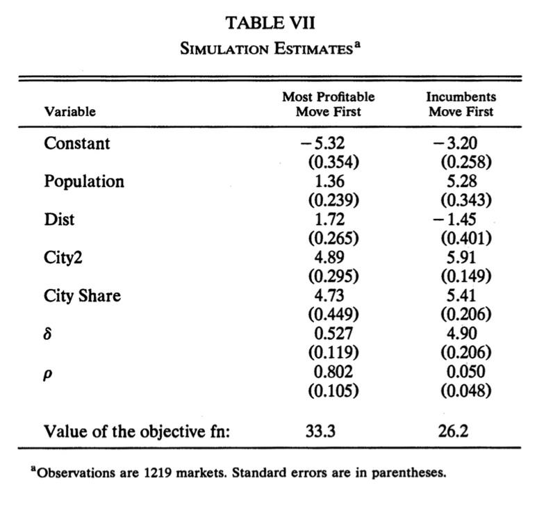
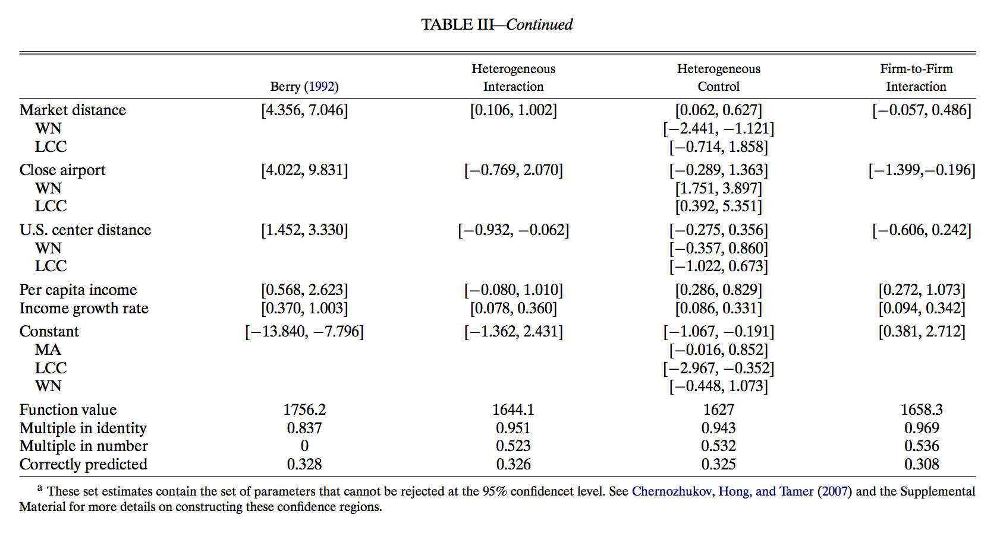

Chapter 6 Entry and Exit
6.1 Entry and Exit
6.1.1 Entry Cost, Mode of Competition, and Market Structure
- Fixed and sunk entry costs and mode of competition are key determinants for market structure.

- The tougher the competition, the less firms can earn enough profit to compensate the entry cost.
- Therefore, the tougher the competition, the number of firms in the market in the equilibrium grow when the market size increases.
6.1.2 Exogenous and Endogenous Entry Cost
:
- It determines the cutoff profit and so the equilibrium number of firms in the market.
The cost is the same across modes of entry.
:
- The cost differ across modes of entry.
- For example, firms decide the quality of the product upon entering the market.
The endogenous fixed and sunk entry cost will be increasing in the quality choice.
- If endogenous fixed and sunk entry cost is relevant, the entry cost to have a positive profit in the market increases as the the number of firms in the market increase.
Therefore, the equilibrium firm size tend to be large when endogenous fixed and sunk entry cost is relevant.
6.1.3 Studying Entry Decisions
- By studying the entry decisions of firms, we can identify the profit function including the entry cost of firms.
- A profit function is the reduced-form of the underlying demand function, cost function, and conduct parameters.
- The profit function can be identified without assuming a particular conduct.
- It is enough to answer questions regarding the market structure and producer surplus.
- Last week, we studied the relationship between the equilibrium price and price elasticity to infer the conduct in the product market.
- In the entry/exit analysis, we study the relationship between the market size and the equilibrium number of firms to infer the conduct in the product market.
6.1.4 Homogeneous and Heterogeneous Entrants
- Entrants may differ in observed and/or unobserved manner.
- In a heterogeneous case, there may be multiple equilibria or there may be no pure-strategy equilibrium.
- This causes severe identification problems.
- We start from a simple homogeneous firm model.
6.1.5 A Simple Homogeneous Firm Model
- There are \(t = 1, \cdots, T\) markets.
- Let \(x_t\) be the state variables of market \(t\) such as population and income level.
- Let \(F_t\) be the exogenous fixed and sunk entry cost in market \(t\).
- When there are \(N_t\) firms in the market, from product market competition, a firm earns a variable profit: \[\begin{equation} V(N_t, x_t, \theta), \end{equation}\] where \(V\) is known up to the unknown profit parameters \(\theta\).
- The net profit in market \(t\) is: \[\begin{equation} \pi(N_t, \theta, F_t) \equiv V(N_t, x_t, \theta) - F_t. \end{equation}\]
- The homogeneity assumption means that \(V\) and \(F_t\) are the same across firms for market \(t\).
6.1.6 Equilibrium Condition
- The equilibrium number of firms \(N_t^*\) in market \(t\) is characterized by: \[\begin{equation} \begin{split} &V(N_t^*, x_t, \theta) - F_t \ge 0, \\ &V(N_t^* + 1, x_t, \theta) - F_t < 0. \end{split} \end{equation}\] that is, \[\begin{equation} V(N_t^*, x_t, \theta) \ge F_t > V(N_t^* + 1, x_t, \theta). \end{equation}\]
- The \(N_t^*\)th firm can enjoy positive net profit.
- The entry of additional firm makes the net profit negative.
6.1.7 Distributional Assumption on Entry Cost
- Assume that entry cost \(F_t\) is drawn from a distribution \(\Phi(\cdot|x_t, \omega)\) that is i.i.d. conditional on the state variable \(x_t\) that is known up to entry cost parameters \(\omega\).
- Then the likelihood of observing \(N_t\) in market \(t\) with state variable \(x_t\) is: \[\begin{equation} \begin{split} &\mathbb{P}\{V(N_t, x_t, \theta) \ge F_t > V(N_t + 1, x_t, \theta)| x_t, \omega\}\\ &=\mathbb{P}\{V(N_t, x_t, \theta) \ge F_t| x_t, \omega\} - \mathbb{P}\{V(N_t + 1, x_t, \theta) \ge F_t| x_t, \omega\}\\ &=\Phi(V(N_t, x_t, \theta)|x_t, \omega) - \Phi(V(N_t + 1, x_t, \theta)|x_t, \omega). \end{split} \end{equation}\]
6.1.8 Log Likelihood Function
- Therefore, the log likelihood of observing \(\{N_t\}_{t = 1}^T\) given \(\{x_t\}_{t = 1}^T\) is: \[\begin{equation} \begin{split} &L(\theta, \omega|\{N_t\}_{t = 1}^T, \{x_t\}_{t = 1}^T) \\ &= \sum_{t = 1}^T \log\{\Phi(V(N_t, x_t, \theta)|x_t, \omega) - \Phi(V(N_t + 1, x_t, \theta)|x_t, \omega)\}. \end{split} \end{equation}\]
- This is a model in \(N_t\).
- If \(\Phi\) is a normal distribution, it is an .
6.1.9 Identification of the Variable Profit
- Suppose that there are many markets whose state variables are roughly \(x\).
- Then, we can identify the distribution of number of firms across market conditional on that the state variables are roughly \(x\).
- The share of such market where the number of firms is \(N\), \(s(N, x)\) has to be: \[\begin{equation} \Phi(V(N, x, \theta)|x, \omega) - \Phi(V(N + 1, x, \theta)|x, \omega), N = 0, 1, 2, \cdots. \end{equation}\]
- Then, \[\begin{equation} \begin{split} &V(0, x, \theta) = 0,\\ &\Phi(V(N + 1, x, \theta)|x, \omega) = \Phi(V(N, x, \theta)|x, \omega) - s(N, x), N = 1, 2, \cdots. \end{split} \end{equation}\]
- You can repeat the argument by changing \(x\).
6.1.10 \(V\) Allow Various Product Market Models
- In theory, we can identify \(V\) nonparametrically.
- It nests various product market models.
6.1.11 An Example of \(V\)
- The variable cost function is \(C(q) = cq - dq^2/2\).
- The demand in market \(t\) is \(Q_t = S_t (\alpha - \beta P_t)\) where \(S_t\) is the market size.
- Firm compete in quantity: \[\begin{equation} \max_{q_j} \frac{1}{\beta}\Bigg(\alpha - \frac{Q_t}{S_t}\Bigg) q_j - cq_j + \frac{d}{2}q_j^2. \end{equation}\]
- The first-order condition for firm \(j\) is: \[\begin{equation} \frac{1}{\beta}\Bigg(\alpha - \frac{Q_t}{S_t}\Bigg) - \frac{q_j}{\beta S_t} - c + dq_j = 0. \end{equation}\]
- Because of symmetry, the FOC is the same across firms.
6.1.12 An Example of \(V\)
- Sum up the FOC across \(N_t\) firms, we get: \[\begin{equation} \begin{split} &\frac{N_t}{\beta}\Bigg(\alpha - \frac{Q_t}{S_t} \Bigg) + \Bigg(-\frac{1}{\beta S_t} + d \Bigg) Q_t - cN_t = 0\\ &\Leftrightarrow Q_t = \frac{N_t S_t \alpha - c N_t \beta S_t}{N_t + 1 - d\beta S_t}. \end{split} \end{equation}\]
- The equilibrium price is: \[\begin{equation} P_t = \frac{\alpha}{\beta} - N_t \frac{\alpha/\beta - c}{N_t + 1 - d \beta S_t}. \end{equation}\]
6.1.13 An Example of \(V\)
- In summary, the variable profit is: \[\begin{equation} \begin{split} V(N_t, S_t, \theta) = \frac{S \theta_1^2 (2 - \theta_2 S_t)}{2(N_t + 1 - \theta_2 S_t)^2}, \end{split} \end{equation}\] where \[\begin{equation} \theta_1 = (\alpha/\beta - c)\sqrt{\beta}, \theta_2 = d\beta. \end{equation}\]
- The variable profit in this case is i) decreasing in \(N_t\) and ii) increasing in \(S_t\).
- Therefore, \(N_t\) is the equilibrium number of entrants if and only if: \[\begin{equation} \begin{split} \frac{S \theta_1^2 (2 - \theta_2 S_t)}{2(N_t + 2 - \theta_2 S_t)^2} < F_t \le\frac{S \theta_1^2 (2 - \theta_2 S_t)}{2(N_t + 1 - \theta_2 S_t)^2}. \end{split} \end{equation}\]
6.1.14 Identification of Demand and Cost Parameters
- In the previous example, the identification of \(V\) is the identification of \(\theta_1\) and \(\theta_2\).
- \(\theta_1\) and \(\theta_2\) are the reduced-form parameters of demand parameters \(\alpha, \beta\) and cost parameters \(c, d\).
- It is clear that we cannot uniquely determine the value of four unknowns from two equations.
- Thus, demand and cost parameters are not necessarily identified even if the variable profit function is identified.
6.1.15 Entry in Small Markets
Bresnahan and Reiss (1990, 1991) study the entry of retail and professional service businesses into small isolated markets in the United States.
- How quickly the variable profit \(V\) drops when the number of firms increases? (How severe is the competition?)
How large the (exogenous) fixed and sunk entry costs of setting up a business are relative to variable profits?
6.1.16 Profit Function Specification
- They considered the following variable profit function specification: \[\begin{equation} V(N_t, S_t, x_t, \theta) = S_t \Bigg(\theta_1 + \sum_{n = 2}^{\overline{N}} \theta_n D_n + x_t'\beta \Bigg), \end{equation}\] where \(D_n\) takes 1 if at least \(n\) firms have entered the market, and \(x_t\) are exogenous state variables of the market.
- \(\theta_1\) captures the monopoly variable profit, and \(\theta_n\) captures how quickly the variable profit drops when additional firm enters the market.
- \(x_t\) includes the per capita income, the log of heating degree days, housing units per population, value per acre of farmland and buildings, median value of owner-occupied houses. It also includes the number of births and the number of elderly residents in doctors’ and dentists’ cases.
6.1.17 Fixed Cost Specification
- The author considers the following fixed costs: \[\begin{equation} F_t = \gamma_1 + \gamma_L W_L + \sum_{n = 2}^{\overline{N}} \gamma_n D_n + \epsilon_t, \epsilon \sim N(0, 1), \end{equation}\] where \(W_L\) is the value per acre of farmland and buildings.
- It allows that the mean fixed cost varies across the number of firms.
6.1.18 Entry Threshold
- To facilitate the interpretation of the estimation result, they computed the ``entry threshold’’ \(S_N\), the smallest market size that would accommodate \(N\) firms.
6.1.19 Town Population Ranges
- 202 isolated local markets in the US. 
6.1.20 Number of Firms in a Market

6.1.21 Population and Number of Firms
 

- As the size of population increase, the number of dentists increases.
6.1.22 Variable Profit Estimation Result


6.1.23 Fixed Cost Estimation Result

6.1.24 Entry Threshold

6.1.25 Firm Heterogeneity
- So far we have assumed that entrants are ex-ante homogeneous.
- In reality, firms have different costs, sell different products, and occupy different locations.
- With firm heterogeneity, the model may have multiple equilibria or have no pure-strategy equilibrium.
- This causes a serious problem for the identification and estimation of the model.
6.1.26 Two-player Entry Game
- Suppose that there are two potential entrants.
- They simultaneously decide whether to enter the market.
- The payoff matrix for the action pairs are: where the superscript \(M\) and \(D\) represent the monopoly and duopoly profits, and the subscript \(1\) and \(2\) represent the firm identity.
- Let \(D_j, j = 1, 2\) be the indicator variables that takes 1 if firm \(j\) enters and 0 otherwise.
6.1.27 Information Structure
- Suppose that there is a firm-specific profit shock that is to the firms but to econometrician.
- So this is a .
- The profit function is: \[\begin{equation} \pi_j = \begin{cases} 0 &\text{ if } D_j = 0\\ \overline{\pi}^M(x, z_j) + \epsilon_j &\text{ if } D_j = 1, D_{-j} = 0\\ \overline{\pi}^D(x, z_j) + \epsilon_j &\text{ if } D_j = 1, D_{-j} = 1. \end{cases} \end{equation}\]
- The terms \(\overline{\pi}^M\) and \(\overline{\pi}^D\) are the mean monopoly and duopoly profit functions.
- These are the parameters of interest.
- \(x\) are the state variables and \(z_j\) are firm \(j\) specific state variables.
6.1.28 Nash Equilibrium
\(\Leftrightarrow\)6.1.29 Nash Equilibrium

- Equilibia at different pairs of \((\epsilon_1, \epsilon_2)\).
- For example, in the green zone, duopoly is the unique equilibriums because \(\epsilon_1 > - \overline{\pi}^D(x, z_1)\) and \(\epsilon_2 > - \overline{\pi}^D(x, z_2)\)
6.1.30 Likelihood Function DOES NOT exist
- The likelihood function maps the parameter to the likelihood of the event.
- In the current model, no firm event happens with probability: \[\begin{equation} \begin{split} &\mathbb{P}\{D_1 = 0, D_2 = 0|x, z_1, z_2\}\\ &= \mathbb{P}\{\epsilon_1 < - \overline{\pi}^M(x, z_1), \epsilon_2 < - \overline{\pi}^M(x, z_2)|x, z_1, z_2\}, \end{split} \end{equation}\] which is the mass of the pink area.
- Duopoly event happens with probability: \[\begin{equation} \begin{split} &\mathbb{P}\{D_1 = 1, D_2 = 1|x, z_1, z_2\}\\ &= \mathbb{P}\{\epsilon_1 > - \overline{\pi}^D(x, z_1), \epsilon_2 > -\overline{\pi}^D(x, z_2) |x, z_1, z_2\},\end{split} \end{equation}\] which is the mass of the green area.
6.1.31 Likelihood Function DOES NOT exist
But what is the likelihood of firm 1 monopoly?
- It is at least as much as the mass of the blue zone.
It is at most as much as the mass of the blue and orange zone.
- The likelihood of firm 1 monopoly is undetermined. It is a range.
The likelihood of firm 2 monopoly is also undetermined.
6.1.32 Multiple Equilibria Problem
- The source of this problem is that there are multiple equilibria when \((\epsilon_1, \epsilon_2)\) is in the orange area.
- We do not have a probability law of selecting a equilibrium from multiple equilibria.
- Therefore, we cannot determine the likelihood.
6.1.33 Resolving Multiple Equilibria Problem
Four types of solutions have been suggested for this multiple equilibria problem.
- Model the probabilities of aggregated outcomes that are robust to the equilibrium selection.
- Place additional conditions on the model that guarantee a unique equilibrium.
- Include in the estimation additional parameter that select among multiple equilibria.
Accept that some models with multiple equilibria are not exactly identified and yet to note that they nevertheless do generate useful restrictions on economic quantities.
6.1.34 Write Likelihood on the Aggregate Outcome
- Even if the equilibrium identity of firms in the market can be indeterminate, the equilibrium number of firms can be determinate.
- Intuitively, the equilibrium number of firms gives information about the average profitability of the market, but does not tell how profitable the market is for a particular firm.
- The equilibrium identity of firms gives information about the profitability of the market for the entered firms and the other firms.
- Therefore, we cannot identify the firm-level unobserved heterogeneity in the profitability across firms when we focus on the equilibrium number of firms.
6.1.35 Entry in the Airline Industry: One-shot Game
- Based on Berry (1992).
- A market = a city pair market at a single point in time.
- Consider a one-shot entry game that yields a network structure.
At the beginning of the period, each firm takes its overall network structure as given and decides whether to operate in a given city pair across markets.
\(\leftrightarrow\) entry decisions can be dependent across markets if the demand/cost shocks are dependent across markets or an entry to a market affects the profit in the other market as well.
6.1.36 Entry in the Airline Industry: Profit Function
Let \(s\) be a strategy profile.
- \(s = (s_1, \cdots, s_{K_i})'\), \(s_k \in \{0, 1\}\).
\(K_i\) is the number of potential entrants in market \(i\).
- The profit function for firm \(k\) in market \(i\): \[\begin{equation} \pi_{ik}(s) = v_i(N(s)) + \phi_{ik} \end{equation}\]
- \(v_i\) is strictly decreasing in \(N\), for every \(\phi_i\).
- \(N_i^*\) is determined by:
\[\begin{equation}
N_i^* = \max_{0 \le n \le K_i} \{n: v_i(n) + \phi_{in} \ge 0\},
\end{equation}\]
where
\[\begin{equation}
\phi_{i1} > \phi_{i2} > \cdots > \phi_{i K_i},
\end{equation}\]
without loss of generality.
6.1.37 Entry in the Airline Industry: Profit Function
- The common term: \[\begin{equation} v_i(N) = X_i \beta + h(\delta, N) + \rho u_{io}, \end{equation}\] where \(X_i\) is the observed market characteristics, \(h(\cdot)\) is a function that is decreasing in \(N\), \(u_{io}\) is the market characteristics that is observed by firms but not by econometrician.
- For example, \(h(\delta, N) = - \delta ln(N)\).
- The firm-specific term: \[\begin{equation} \phi_{ik} = Z_{ik} \alpha + \sigma u_{ik}, \end{equation}\] where \(Z_{ik}\) is the observed firm characteristics.
- A scale normalization: \(\sigma = \sqrt{1 - \rho^2}\) \(\Rightarrow var(\rho u_{i0} + \sigma u_{ik}) = 1\).
6.1.38 Entry in the Airline Industry: Likelihood Function
- The observed part: \[\begin{equation} r_{ik}(N) = X_i \beta - \delta \ln (N) + Z_{ik} \alpha. \end{equation}\]
- The unobserved part: \[\begin{equation} \epsilon_{ik} = \sqrt{1 - \rho^2} u_{ik} + \rho u_{io}. \end{equation}\]
- Then, \[\begin{equation} N_i^* \le N \Leftrightarrow \#\{k: \epsilon_{ik} \le - r_{ik}(N)\} \le N. \end{equation}\]
6.1.39 Is the Equilibrium Number of Firms Unique?
Either of the following conditions are sufficient:
- No firm-level unobserved heterogeneity: \(\rho = 1\).
- No market-level unobserved heterogeneity: \(\rho = 0\).
The order of entry is predetermined:
- The most profitable firms enter first.
The incumbent firms enter first.
6.1.40 Entry in the Airline Industry: \(\rho = 1\) or \(\rho = 0\)
- For each firm \(i\), given \(W_i = (X_i, Z_i)\) and parameter \(\theta\), simulate \(R\) equilibrium number of firms \(N_i^{(r)}, r = 1, \cdots, R\) based on the previous condition by drawing \(R\) errors \(u_{i}^{(r)}, r = 1, \cdots, R\): \[\begin{equation} \begin{split} &\pi_i(N, u_i^{(r)}) = X_i \beta + Z_{ik} \alpha - \delta \ln(N) + \rho u_{io}^{(r)} + \sqrt{1 - \rho^2} u_{ik}^{(r)},\\ &n(W_i, \theta, u_i^{(r)}) = \max_{0 \le n \le K_i} \{n: \#\{k: \pi_{ik}(N, u_i^{(r)}) \ge 0 \} \ge n\}. \end{split} \end{equation}\]
- Compute the simulated average: \[\begin{equation} N(W_i, \theta, u_i^{(1)}, \cdots, u_i^{(R)}) = \frac{1}{R} \sum_{r = 1}^R n(W_i, \theta, u_i^{(r)}). \end{equation}\]
- Regress the observed number of the simulated average: \[\begin{equation} \hat{\theta} = \text{argmin}_{\theta} \frac{1}{T} \sum_{i = 1}^T [N_i - N(W_i, \theta, u_i^{(1)}, \cdots, u_i^{(R)})]^2. \end{equation}\]
6.1.41 Entry in the Airline Industry: \(\rho = 1\) or \(\rho = 0\)

6.1.42 Entry in the Airline Industry The most profitable firms move first
- Given parameter \(\theta\) and error \(u_{i}^{(r)}\), firm \(k\) enters market \(i\) if: \[\begin{equation} n(W_i, \theta, u_i^{(r)}) \ge q_k(W_i, \theta, u_i^{(r)}), \end{equation}\] where \(q_k(W_i, \theta, u_i^{(r)})\) the ranking of firm \(k\) in market \(i\) in terms of \(\pi_{ik}(W_i, \theta, u_i^{(r)})\).
- Let \(d_{ik}(W_i, \theta, u_i^{(r)})\) be the indicator variable that takes \(1\) if firm \(k\) enters market \(i\) given \(W_i, \theta\), and \(u_i^{(r)}\).
- Compute the simulated probability of entry: \[\begin{equation} P_{ik}(W_i, \theta, u_i^{(1)}, \cdots, u_i^{(R)}) = \frac{1}{R} \sum_{r = 1}^R d_{ik}(W_i, \theta, u_i^{(r)}). \end{equation}\]
- Estimate the parameter by: \[\begin{equation} \hat{\theta} = \text{argmin}_\theta \frac{1}{T} \sum_{i = 1}^T \frac{1}{K_i}\sum_{k = 1}^{K_i} [I_{ik} - P_{ik}(W_i, \theta, u_i^{(1)}, \cdots, u_i^{(R)})]^2, \end{equation}\] where \(I_{ik}\) takes 1 if firm \(k\) enters market \(i\) in the data.
6.1.43 Entry in the Airline Industry: Data
- (O&D survey).
- Focus on 1980Q1 and Q3.

6.1.44 Entry in the Airline Industry: Simulation Estimates

6.1.45 Set Identification
- A model may not predict a unique outcome.
- However, it still restricts the set of possible outcomes.
- We can use these restrictions to infer the parameter.
- Such restrictions may be too weak to point identify the parameter, but allows .
6.1.46 Set Identification
Let \(\Theta\) is the set of parameters and \(\mathcal{P}: \Theta \to \Delta(Y, X)\) be the set of possible data distributions under parameter \(\theta\).
The mapping \(\mathcal{P}\) is multi-valued if the model does not predict a unique outcome.
- Suppose we observe a data distribution on \((X, Y)\), say \(\pi \in \Delta(Y, X)\).
- Given the model \(\mathcal{P}\), the set of parameters that are consistent with the observation \(\pi\) is: \[\begin{equation} \{\theta \in \Theta: \pi \in \mathcal{P}(\theta)\}, \end{equation}\] which is called the .
If the identified set is a singleton, the parameter is point-identified.
6.1.47 Identified Set in the Two Player Entry Game
- No firm event happens with probability: \[\begin{equation} \mathbb{P}\{D_1 = 0, D_2 = 0|x, z_1, z_2\} = \mathbb{P}\{\epsilon_1 < - \overline{\pi}^M(x, z_1), \epsilon_2 < - \overline{\pi}^M(x, z_2)|x, z_1, z_2\}. \end{equation}\]
- Duopoly event happens with probability: \[\begin{equation} \scriptsize \mathbb{P}\{D_1 = 1, D_2 = 1|x, z_1, z_2\}= \mathbb{P}\{\epsilon_1 > - \overline{\pi}^D(x, z_1), \epsilon_2 > -\overline{\pi}^D(x, z_2) |x, z_1, z_2\}. \end{equation}\]
- The bounds for firm 1 monopoly probability is: \[\begin{equation} \begin{split} &\mathbb{P}\{-\overline{\pi}^M(x, z_1) \le \epsilon_1, \epsilon_2 \le -\overline{\pi}^D(x, z_2) |x, z_1, z_2\} - \\ &\mathbb{P}\{-\overline{\pi}^M(x, z_1) \le \epsilon_1 \le -\overline{\pi}^D(x, z_1), -\overline{\pi}^M(x, z_2) \le \epsilon_2 \le -\overline{\pi}^D(x, z_2) |x, z_1, z_2\}\\ &\le \mathbb{P}\{D_1 = 1, D_2 = 0|x, z_1, z_2\}\\ &\le \mathbb{P}\{-\overline{\pi}^M(x, z_1) \le \epsilon_1, \epsilon_2 \le -\overline{\pi}^D(x, z_2) |x, z_1, z_2\}. \end{split} \end{equation}\]
- The bounds for firm 2 monopoly probability is obtained in the same way.
6.1.48 Entry in the Airline Industry: Bounds Estimation
- Let the lower bound functions be: \[\begin{equation} \begin{split} \underline{H}(0, 0|x, z_1, z_2) &= \mathbb{P}\{\epsilon_1 < - \overline{\pi}^M(x, z_1), \epsilon_2 M -\overline{\pi}^M(x, z_2) |x, z_1, z_2\},\\ \underline{H}(1, 1|x, z_1, z_2) &= \mathbb{P}\{\epsilon_1 > - \overline{\pi}^D(x, z_1), \epsilon_2 > -\overline{\pi}^D(x, z_2) |x, z_1, z_2\},\\ \underline{H}(1, 0|x, z_1, z_2) &=\mathbb{P}\{-\overline{\pi}^M(x, z_1) \le \epsilon_1, \epsilon_2 \le -\overline{\pi}^D(x, z_2) |x, z_1, z_2\}\\ &- \mathbb{P}\{-\overline{\pi}^M(x, z_1) \le \epsilon_1 \le -\overline{\pi}^D(x, z_1),\\ & -\overline{\pi}^M(x, z_2) \le \epsilon_2 \le -\overline{\pi}^D(x, z_2) |x, z_1, z_2\},\\ \underline{H}(0, 1|x, z_1, z_2) &=\mathbb{P}\{ \epsilon_1 \le -\overline{\pi}^D(x, z_1), -\overline{\pi}^M(x, z_2) \le \epsilon_2|x, z_1, z_2\}\\ &- \mathbb{P}\{-\overline{\pi}^M(x, z_1) \le \epsilon_1 \le -\overline{\pi}^D(x, z_1),\\ & -\overline{\pi}^M(x, z_2) \le \epsilon_2 \le -\overline{\pi}^D(x, z_2) |x, z_1, z_2\} \end{split} \end{equation}\]
- This is the lower bound of the probabilities of each equilibrium.
6.1.49 Entry in the Airline Industry: Bounds Estimation
- Let the upper bound functions be: \[\begin{equation} \begin{split} \overline{H}(0, 0|x, z_1, z_2) &= \mathbb{P}\{\epsilon_1 < - \overline{\pi}^M(x, z_1), \epsilon_2 < -\overline{\pi}^M(x, z_2) |x, z_1, z_2\},\\ \underline{H}(1, 1|x, z_1, z_2) &= \mathbb{P}\{\epsilon_1 > - \overline{\pi}^D(x, z_1), \epsilon_2 > -\overline{\pi}^D(x, z_2) |x, z_1, z_2\},\\ \overline{H}(1, 0|x, z_1, z_2) &=\mathbb{P}\{-\overline{\pi}^M(x, z_1) \le \epsilon_1, \epsilon_2 \le -\overline{\pi}^D(x, z_2) |x, z_1, z_2\},\\ \overline{H}(0, 1|x, z_1, z_2) &=\mathbb{P}\{ \epsilon_1 \le -\overline{\pi}^D(x, z_1), -\overline{\pi}^M(x, z_2) \le \epsilon_2|x, z_1, z_2\}. \end{split} \end{equation}\]
- This is the upper bound of the probabilities of each equilibrium.
6.1.50 Entry in the Airline Industry: Simulate the Bounds
- The bounds do not necessarily have analytical expression.
- Then, we can draw \(R\) errors \(\epsilon_i^{(r)} = (\epsilon_{i1}^{(r)}, \epsilon_{i2}^{(r)})\) to compute the bounds.
- For example, we can compute the upper bound for \((1, 0)\) in market \(i\) with \((x_i, z_{i1}, z_{i2})\) evaluated at a parameter \(\theta\) by: \[\begin{equation} \begin{split} &\overline{H}(1, 0|x_i, z_{i1}, z_{i2}; \epsilon_{i}^{(1)}, \cdots, \epsilon_i^{(R)}) \\ &= \frac{1}{R} \sum_{r = 1}^R 1\{ -\overline{\pi}^M(x_i, z_{i1}) \le \epsilon_{i1}^{(r)}, \epsilon_{i2}^{(r)} \le -\overline{\pi}^D(x_i, z_{i2})\}. \end{split} \end{equation}\]
- You can compute the upper/lower bounds for other equilibria and at other markets as well.
6.1.51 Entry in the Airline Industry: Moment Condition
- In estimation using moment , we penalize a parameter when the moment is away from zero.
- Now we consider estimation using moment in addition to moment equalities.
- In this case, we penalize a parameter only when it is away from zero in one direction.
6.1.52 Entry in the Airline Industry: Estimate the Reduced-form Probability
- We can estimate the probability of \((D_1, D_2)\) conditional on \((x, z_1, z_2)\) using data across markets: \[\begin{equation} \hat{P}(d_1, d_2|x, z_1, z_2) = \frac{1}{T} \sum_{i = 1}^T 1\{D_{i1} = d_1, D_{i2} = d_2|x, z_1, z_2\}. \end{equation}\]
- This summarizes the data distribution.
- We try to find parameters that are consistent with this data distribution.
6.1.53 Entry in the Airline Industry: Objective Function
- Given the simulated bounds at each market, we can consider the following objective function: \[\begin{equation} \begin{split} \hat{Q}(\theta) = \frac{1}{T} \sum_{i = 1}^T \Bigg\{ &[\hat{P}(x_i, z_{1i}, z_{2i}) - \underline{H}(x_i, z_{1i}, z_{2i}; \epsilon_{i}^{(1)}, \cdots, \epsilon_i^{(R)})]_{-} \\ &+ [\hat{P}(x_i, z_{1i}, z_{2i}) - \overline{H}(x_i, z_{1i}, z_{2i}; \epsilon_{i}^{(1)}, \cdots, \epsilon_i^{(R)})]_{+}]\Bigg\}, \end{split} \end{equation}\] where \([x]_{-} = 1\{x < 0\} |x|\) and \([x]_{+} = 1\{x > 0\} |x|\).
- Parameter \(\theta\) such that \(\hat{Q}(\theta) = 0\) is consistent with the data.
6.1.54 Entry in the Airline Industry: Heterogeneous Competitive Effect
- In the previous application, we can use either of the bounds approach and the aggregation approach.
- In some cases, we cannot use the aggregation approach, that is, there is a situation where even the equilibrium number of firms is not unique.
- For example, if there is heterogeneous competitive effect, the entry game does not have a unique prediction on the number of entrants: \[\begin{equation} \pi_{ik} = X_k \beta_k + Z_{ik} \alpha_k + \underbrace{\sum_{l \neq k} \delta_l^k D_{li} + \sum_{l \neq k} Z_{li} \phi_l^k D_{li}}_{\text{heterogeneous competitive effect}} + \epsilon_{il}. \end{equation}\]
- Then, the only way is to assume the order of entry or the bounds approach.
6.1.55 Entry in the Airline Industry: Data
- Ciliberto & Tamer (2009).
- They use the same O&D survey.
- They focus on 2001Q2.
- They mainly study the heterogeneous competitive effects between legacy carriers and LCCs.

